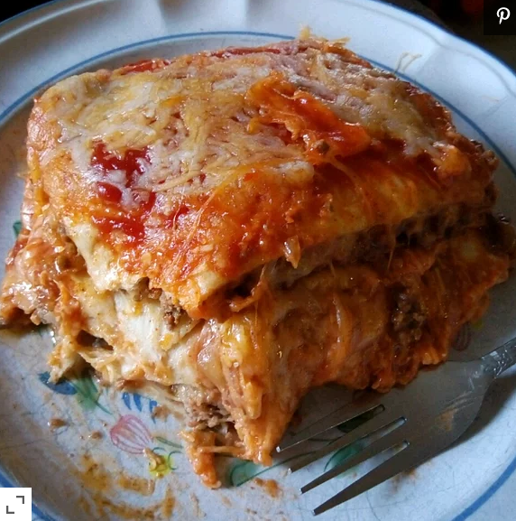

Lasagna

Description:
From a simple recipe you can create a beautiful and tasty meal.
Ingredients:
- 1½ pounds of ground beef
- 1/4 cup of water
- 1 ounce of taco seasoning mix
- 12 (8 inch) tortillas, more if needed
- 1 (14 ounce) can of refried beans
- 3 cups of shredded Colby-Jack cheese
- 1 (8 ounce) jar of taco sauce
- 1 cup of shredded Colby-Jack cheese
Steps:
- Preheat oven to 175 degrees C (350 f). Grease a 9x13-inch casserole dish
- Heat a large skillet over medium - high heat and stir in the ground beef.
Cook and stir until beef is crumbly, evenly browned, and no longer pink, about 10 minutes.
Drain and discard any excess grease. Add water and taco seasoning; cook and stir until
mixture has thickened, 5 - 10 minutes
- Arrange 3 tortillas in the bottom of the casserole dish; spread about half the can of refried beans
and half the ground beef atop the tortilla layer. Sprinkle 1 cup Colby-Jack cheese over ground beef
layer. Arrange 3 more tortillas over the cheese. Spread in the remaining 1/2 can refried beans and
half the jar of taco sauce; sprinkle with 1 cup Colby-Jack cheese. Arrange 3 more tortillas and top
with remaining ground beef and 1 cup Colby-Jack cheese. Top with last 3 tortillas and remaining
1/2 jar taco sauce.
- Bake in the preheated oven until top tortilla layer begins to brown, 20 - 25 minutes.
Sprinkle 1 cup Colby-Jack cheese over lasagna.
- Turn on oven's broiler
- Place lasagna under the broiler until Colby-Jack cheese is melted and bubbling, 3 - 5 minutes.
Return